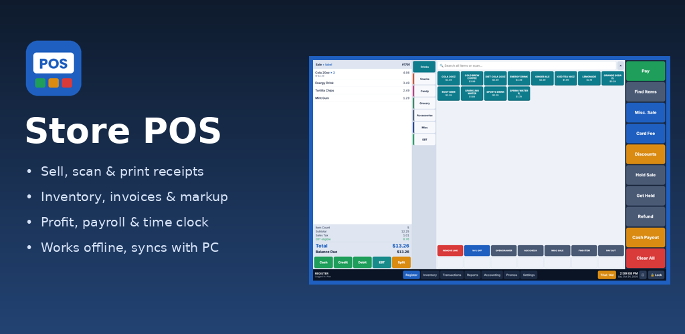

Store POS
Point of sale for convenience stores and small retail — by Indo American LLC

- Fast touch register, barcode scanning, cash / card / EBT, split payments, refunds
- Receipt printers (network and Bluetooth) and cash drawer
- Inventory, vendor invoices (PDF, Excel, CSV), markup and price-check alerts
- Daily profit, payroll and employee time clock
- Works on an Android tablet on its own, or linked to the Store POS Windows register — keeps selling offline
Support: atrivedi2508@gmail.com · Privacy policy